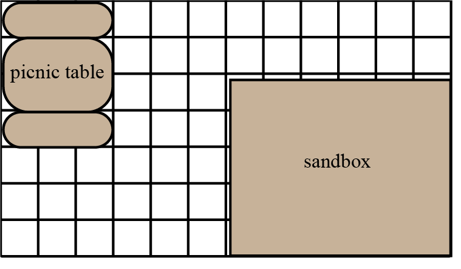
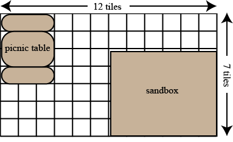
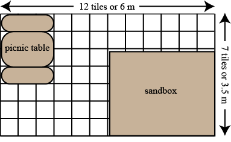

Problem
Mr. Lee’s Grade 4 class is going to create a play area for their school’s daycare that includes a picnic table and a sandbox. They want square foam tiles under the entire play area (even under the sandbox and under the picnic table). There will be a rubber trim surrounding the play area to keep the tiles in place.
This is a picture of their plan. Each small square represents one square foam tile.

How many foam tiles do the students need to complete this job?
If each foam tile is \(0.5\) m by \(0.5\) m, how many metres of rubber trim is needed to surround the entire play area?
Solution
There are several ways of solving this question.
There are \(12\) groups of \(7\) tiles or \(12 \times 7\) tiles. Simply counting the small squares of a \(12 \times 7\) grid determines that there are \(84\) small squares in the grid.

Rather than counting, the number of tiles in the play area can be calculated using multiplication. One way of calculating the product \(12 \times 7\) is by breaking \(12\) into \(10 + 2\). We know that \(10 \times 7 = 70\), and \(2 \times 7 = 14\). We can add these together to determine the value of \(12 \times 7\). That is, \(12 \times 7 = 70 + 14 = 84\).
Similarly, using the split array model, the play area can be split into two rectangles: a \(10\times 7\) rectangle and a \(2\times 7\) rectangle. This leads to a total of \(70 + 14 = 84\) tiles.
Therefore, the answer is \(84\) tiles.
If every tile is \(0.5\) m or \(\frac{1}{2}\) m or \(50\) cm, then \(2\) adjacent tiles would have a length of \(1\) m. Thus \(12\) tiles would have a length of \(6\) m, and \(7\) tiles would have a length of \(3.5\) m. Therefore, the play area has dimensions \(6\) m and \(3.5\) m.

To find the amount of rubber trim for the play area, we need to determine its perimeter. This may be calculated by adding the lengths of all sides. \[3.5 \text{ m} + 6 \text{ m} + 3.5 \text{ m} + 6 \text{ m} = 19 \text{ m}\]
Thus, \(19\) m of rubber trim is required.
Teacher’s Notes
Generally speaking, calculating the area or perimeter of a rectangle is quite straightforward as long as you know its dimensions. For this problem, students need to do a bit of work to determine the length and width of the play area. In particular, the students must recognize that the width of the picnic table is the same on both sides, even though they can’t see the tiles underneath. From the diagram they know that the picnic table is three tiles wide at one end, then they know that it is the same width on the opposite side. This allows them to determine the longer dimension of the rectangle.
Very often in the real world we are given incomplete information when trying to solve a problem. The logical thinking that we practise in mathematics can help fill in the blanks.